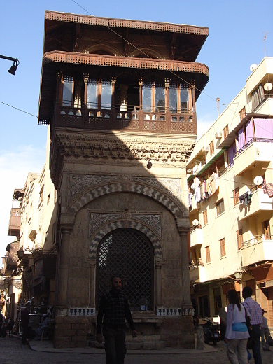

Egypt Trav-E-Log ©
Cairo Arrival
6 Nov 2010, Cairo, Egypt
-------------------------------------------
Arrived in Cairo on a flight from Tanzania with connection in Kenya. After 20 years, I finally get to follow in my sister's and daughter's footsteps along the Nile! But first, still have a lot of excess baggage, including electronics to be cleaned up and sent to the computer club in Tanzania. Will also send a package back to California of items not needed while backpacking.
-------------------------------------------
It's early November, and it does get rather cool in Cairo -- located at 30 degrees N latitude. I hear that Alexandria gets much colder, so will probably skip going to the Mediterranean coast.
Another view from the hotel window. The architecture as well as cleanliness of Cairo struck me. These people are proud of their city.
| |
Enjoyed walking around the core of Cairo such as Old Cairo, Islamic City, Coptic Cairo, the Citadel, and Tahrir Square, only two blocks from my hotel. Cairo is filled with ancient and modern architectural dreams. And the Nile runs through it all!
Egyptian High Court of Justice.
|  |
Coptic Cairo was a Christian stronghold until the introduction of Islam in the mid eighth century. Several historically important churches are located in Cairo, so took photos of a few churches during my daily walks and sightseeing. Nice structures, but appearantly not the "historic" Coptic churches. |
|
Another church in Cairo. Do the towers on either side remind you of minarets? |
|
Ahh, the fruit sellers in the markets. Always my friends. And Cairo has many fruits to tempt you. |
 |
Quick, Is this Church or Mosque?* |
|
View along Cairo"s old city wall. |
|
Just look at the amazing attention to detail! Walking around Old Islamic Cairo, a World Heritage site, is really important to appreciate Egypt in general and Cairo specifically. |
 |

El Mui'zz street |
Vaulted entrance near Madrassa |
*Photo taken in the Masjid al-Sultan Barquq, associated with the Madrasa.
Question? Contact me at the Juno.com address Dancer2SEAsia.
Have a nice day, and start planning your next trip!